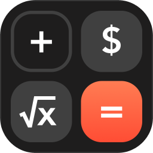

Color Calculator
Color Calculator is a beautiful calculator app with 60+ elegant skins. Our exclusive "Dynamic Skins" create the coolest "animated calculator" on the market, with weekly updates!



Super Calculator
Super Calculator is a full-featured calculator app.
Supports basic calculation, scientific calculation, currency conversion, and unit conversion.
Features voice number reading and history recording.
Color Countdown
Color Countdown helps you track birthday countdowns, anniversary countdowns, holiday countdowns, event countdowns, and meeting countdowns. You can also record various special days such as relationship anniversaries and coming-of-age anniversaries. Experience the precise passage of time and better manage your schedule.